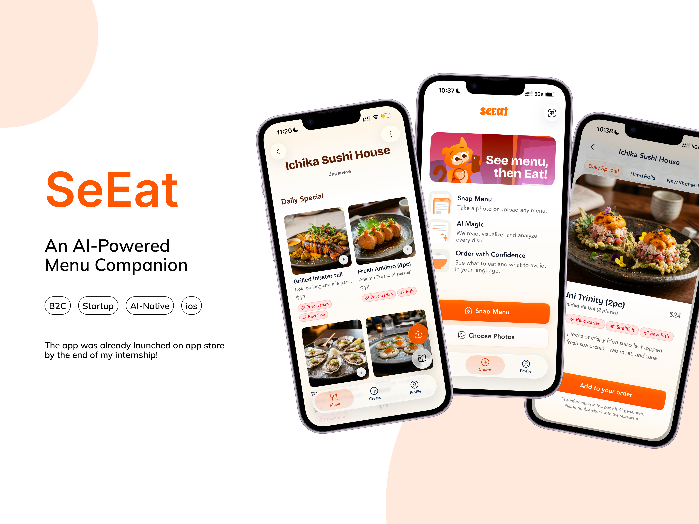
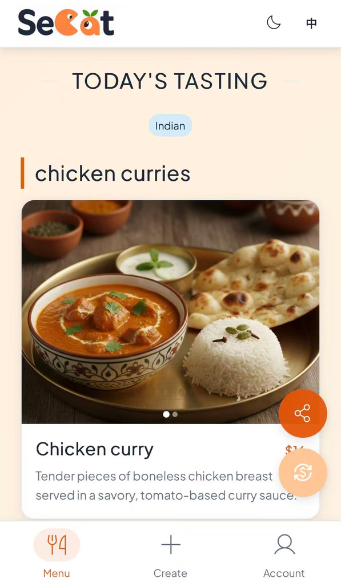
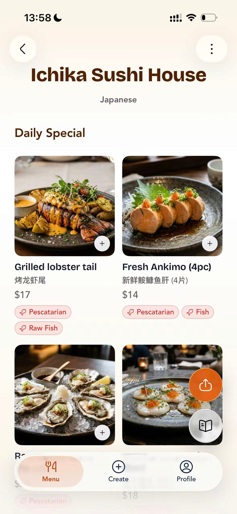
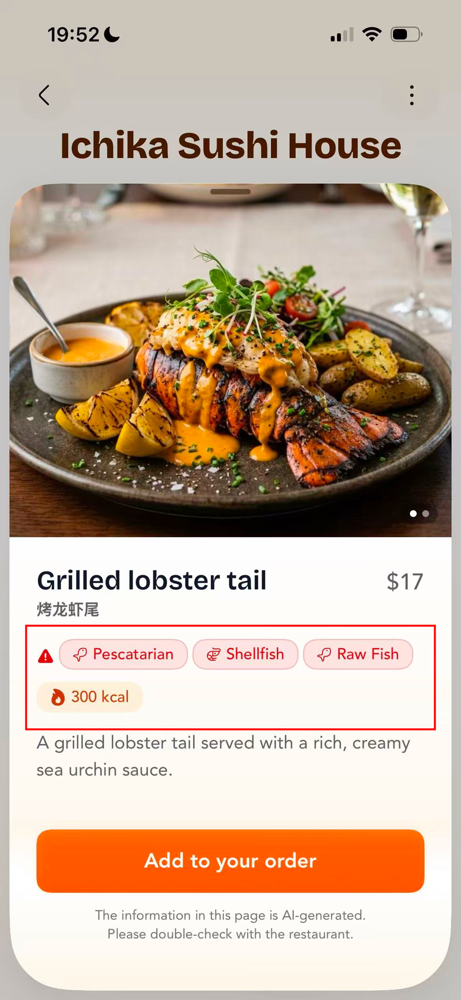
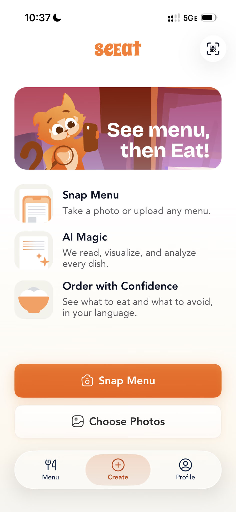
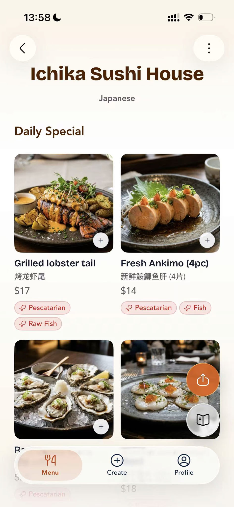
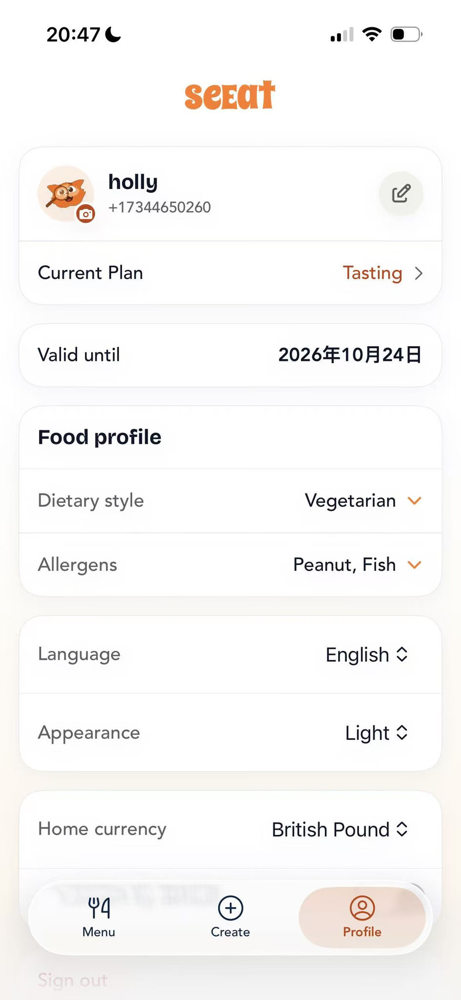
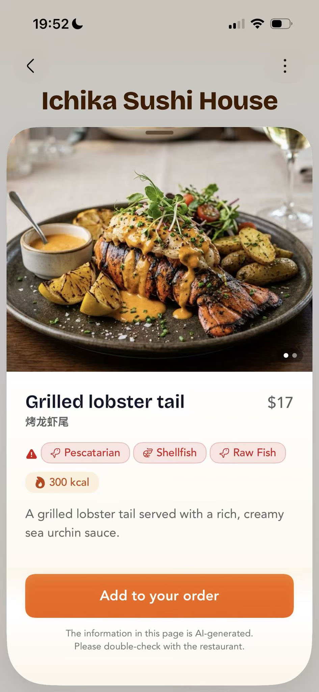
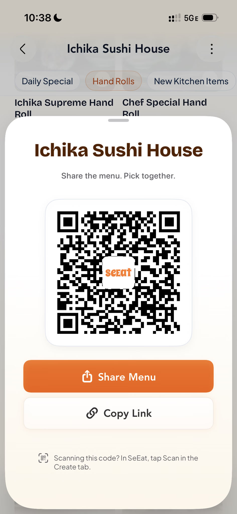
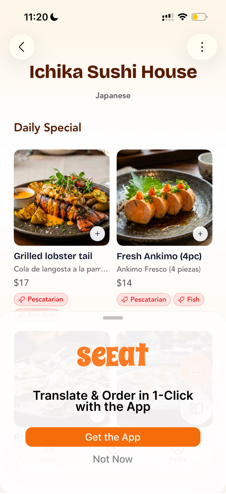

1. Translation ≠ Understanding
Translation gives users words, but not always enough context to understand the dish.

Developed during my product design internship at an AI-native startup, SeEat is an AI-powered menu translation app that helps travelers and international diners confidently navigate foreign-language menus through intelligent translation, dish visualization, and personalized recommendations. By the end of my internship, the app was successfully launched on the App Store, transforming the product from concept to a real-world experience.
Breaking Language Barriers in Cross-Cultural Dining
During my product design internship at an AI-native startup, our team set out to explore one simple question: why is ordering food abroad still so stressful in the age of AI? Through user interviews with travelers and international students, we discovered that the challenge extended far beyond translation. Existing tools could translate words, but they couldn't help users understand unfamiliar dishes, identify dietary risks, or feel confident placing an order.
As we iterated on the product, I led UX research, interaction design, branding, and high-fidelity interface design, and worked closely with engineers to transform insights into a production-ready mobile application.
“I can translate the menu, but I still have no idea what the dish actually is.”— A Traveller
Understanding How People Navigate Unfamiliar Menus
I conducted 8 informal user interviews with international students to understand how they navigate unfamiliar menus, what information they rely on when ordering, and where existing translation tools fall short.
Our interview strategy aimed to understand how international students navigate unfamiliar menus, make dining decisions, and evaluate AI-assisted support. We sought answers to key questions:
Translation gives users words, but not always enough context to understand the dish.
Users jump between multiple tools just to decide what to order.
Users prioritize fast, accurate information over flashy AI features.
How might we help international diners quickly understand unfamiliar dishes and make confident dining decisions—all in one place?
Provide visual and contextual information that helps users understand what a dish actually is.
Bring translation, dish information, and recommendations into one seamless experience.
Prioritize speed, accuracy, and clarity over flashy AI interactions.
From a Functional MVP to a Complete Dining Experience
When I joined the project, SeEat had a functional MVP centered around menu generation and basic account management. However, the experience lacked clear onboarding, personalization, and contextual support for helping users make dining decisions.
My goal was to evolve the MVP from a simple menu visualization tool into a cohesive, user-centered dining experience.
Design Iteration 1
The original layout dedicated most of the screen to a single dish, making it difficult for users to quickly browse a full menu and compare options.
I redesigned the menu with a compact, card-based layout that surfaces multiple dishes at once, allowing users to scan options and access key information more efficiently.


Design Iteration 2
Dish names and images alone don't provide enough information for every user to make a confident choice. Dietary needs, allergens, and nutritional considerations can significantly affect what users are able—or willing—to order.
I introduced calorie estimates and allergen tags directly into the menu, helping users quickly evaluate dishes based on their dietary needs.

SeEat transforms scanned menus into visual, translated dish cards, helping users understand unfamiliar food at a glance.


Calorie estimates and potential allergen information help users quickly identify dishes that fit their dietary needs.


Dish names and images alone don't provide enough information for every user to make a confident choice. Dietary needs, allergens, and nutritional considerations can significantly affect what users are able—or willing—to order.
I introduced calorie estimates and allergen tags directly into the menu, helping users quickly evaluate dishes based on their dietary needs.

